Habillez votre personnage. Ajoutez cinq choses, avec les couleurs. Écrivez son prénom sous les pieds.
À deux, sans se montrer les feuilles. Vous dessinez, puis vous expliquez.
Votre partenaire dessine la même chose. À la fin, on compare.
Le personnagePrénom :
Pour parler
- Il porte un manteau rouge.
- C'est un sac à dos bleu.
- Il a des lunettes.
- — De quelle couleur? — Vert.
Quand ça bloque
Peux-tu répéter?Plus lentement.Comment ça s'écrit?
C'est où?Je recommence.
Le personnage · niveau 2
Les mots en images
Les mots de la fiche « Le personnage ». Gardez cette feuille à côté
de vous pendant que vous parlez.
Ce qu'il porte
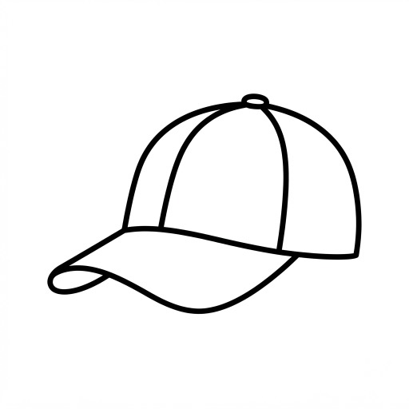
une casquetteSituation du programme
Salle de classeLAN-2029-4
Donner des renseignements sur le fonctionnement de la classe (PO)Comprendre une directive (CO)
La classe est vide. Placez-y six objets. Un objet sur la table, un objet sous la table.
À deux, sans se montrer les feuilles. Vous dessinez, puis vous expliquez.
Votre partenaire dessine la même chose. À la fin, on compare.
La classePrénom :
Pour parler
- Il y a un cahier sur la table.
- Le sac à dos est sous la chaise.
- Les crayons sont dans l'étui.
- — C'est devant ou derrière?
Quand ça bloque
Peux-tu répéter?Plus lentement.Comment ça s'écrit?
C'est où?Je recommence.
La classe · niveau 2
Les mots en images
Les mots de la fiche « La classe ». Gardez cette feuille à côté
de vous pendant que vous parlez.
Les gros objets
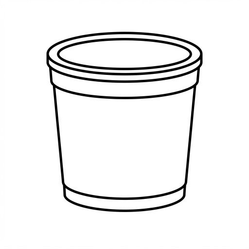
une poubelleLes petits objets
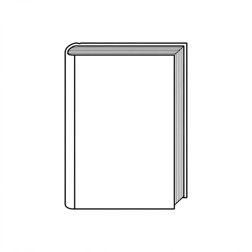
un dictionnaire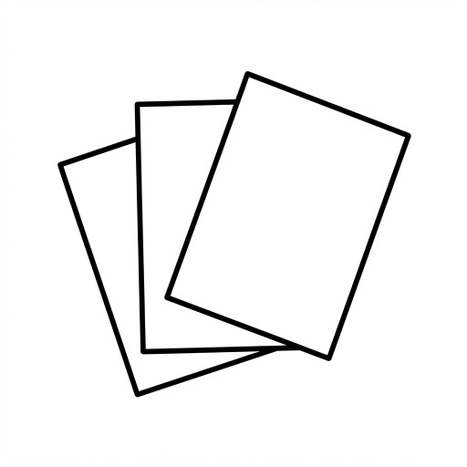
des feuillesOù?
sur
sous
dans
devant
derrière
entre
Situation du programme
Salle de classeLAN-2029-4
Comprendre une directive (CO et CE)Donner des renseignements sur le fonctionnement de la classe (PO)
Dessinez le temps qu'il fait. Ajoutez le soleil ou les nuages, et deux choses sur la terre.
À deux, sans se montrer les feuilles. Vous dessinez, puis vous expliquez.
Votre partenaire dessine la même chose. À la fin, on compare.
La météoPrénom :
Pour parler
- Il fait beau. Il y a le soleil.
- Il neige. Il fait froid.
- Il y a un arbre à gauche.
- — Quel temps fait-il? — Il pleut.
Quand ça bloque
Peux-tu répéter?Plus lentement.Comment ça s'écrit?
C'est où?Je recommence.
La météo · niveau 2
Les mots en images
Les mots de la fiche « La météo ». Gardez cette feuille à côté
de vous pendant que vous parlez.
Dans le ciel
 le soleil
le soleil un nuage
un nuage la pluie
la pluie le vent
le ventSur la terre
 un arbre
un arbre un sapin
un sapin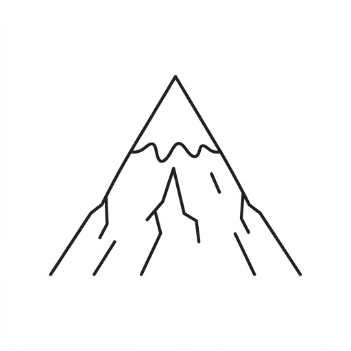
une montagneSituation du programme
MétéoLAN-2029-4
Comprendre un bulletin météo (CE)
Les aliments · combien
La table
Mettez cinq choses sur la table. Écrivez combien il y en a.
À deux, sans se montrer les feuilles. Vous dessinez, puis vous expliquez.
Votre partenaire dessine la même chose. À la fin, on compare.
La tablePrénom :
Pour parler
- Il y a trois pommes dans l'assiette.
- Le verre est à côté de l'assiette.
- Il y a un peu de fromage.
- — Combien de bananes? — Deux.
Quand ça bloque
Peux-tu répéter?Plus lentement.Comment ça s'écrit?
C'est où?Je recommence.
La table · niveau 2
Les mots en images
Les mots de la fiche « La table ». Gardez cette feuille à côté
de vous pendant que vous parlez.
Les aliments
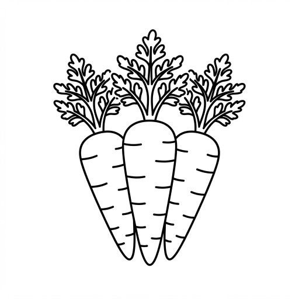
des carottesSur la table
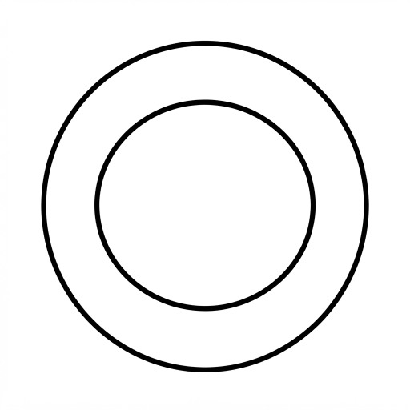
une assiette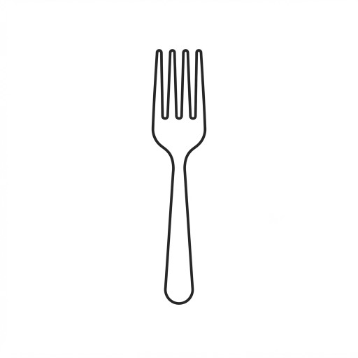
une fourchette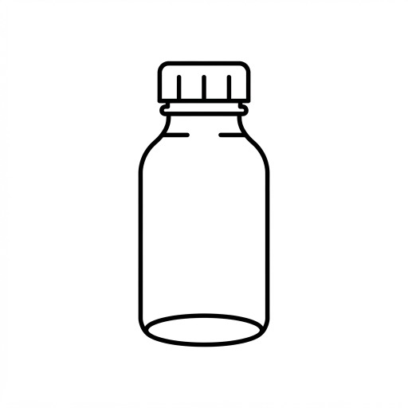
une bouteilleCombien?
un
deux
trois
beaucoup de
un peu de
Situation du programme
Achat d’alimentsLAN-2029-4
Consulter des étiquettes pour repérer des indications de mesure et de prix (CE)
Écrivez le nom d'un lieu sur chaque enseigne. Ajoutez deux choses sur le trottoir.
À deux, sans se montrer les feuilles. Vous dessinez, puis vous expliquez.
Votre partenaire dessine la même chose. À la fin, on compare.
La ruePrénom :
Pour parler
- Il y a une pharmacie à droite.
- L'école est à côté de la banque.
- Je vais à l'école en autobus.
- — C'est où? — Tournez à gauche.
Quand ça bloque
Peux-tu répéter?Plus lentement.Comment ça s'écrit?
C'est où?Je recommence.
La rue · niveau 2
Les mots en images
Les mots de la fiche « La rue ». Gardez cette feuille à côté
de vous pendant que vous parlez.
Les lieux
une banque
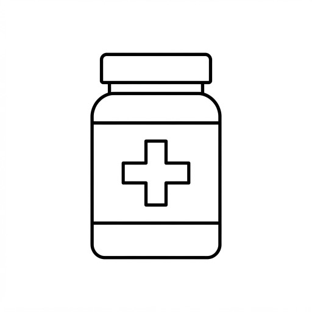
une pharmacie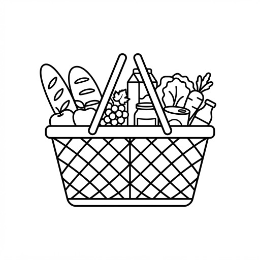
une épicerie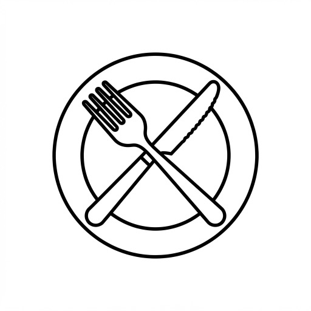
un restaurantSituation du programme
Déplacement dans une villeLAN-2029-4
Demander et comprendre de l'information sur la localisation (CO et PO)Repérer de l'information sur un plan (CE)